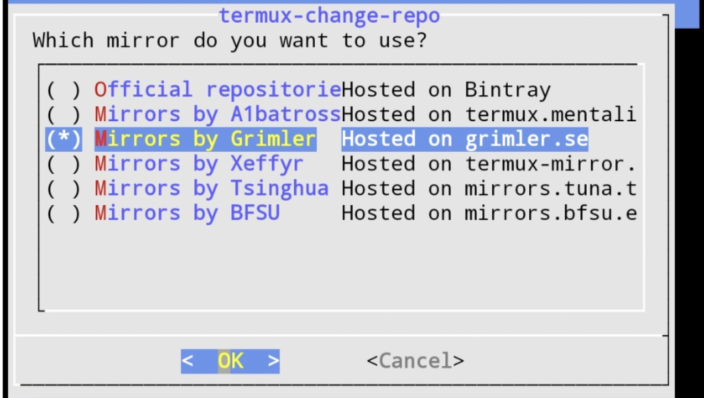

Cara ini pas untuk kamu yang mengalami kendala pada saat meng-install package di termux. Biasanya hal ini terjadi pada device yang sudah android 12 ke atas
namun ga perlu kawatir, ini solusi untuk masalah tersebut, hanya dengan mengganti repository termux nya saja.
Step 1 - Meng-ganti repository
untuk meng-ganti repository, kalian cukup ketikan saja command dibawah.
termux-change-repo
Selanjutnya langsung enter saja jika sudah memilih "main repository"
Step 2 - Memilih repository

Pada menu pemilihan repository, kalian bisa pilih sesuai yang support dengan device kalian, bisa kalian coba 1 per 1.
Jika sudah memilih repository, bisa langsung di enter saja. Dan jalankan command berikut:
pkg upgrade
Setelah run command di atas, termux akan memulai upgrade. jika muncul option Do you want to continue? ketikan saya Y pada command termux-nya.
Sampai sini kita sudah berhasil mengganti repository pada termux, selanjut nya kalian bisa coba untuk install kembali package yang sebelumnya ingin di install.